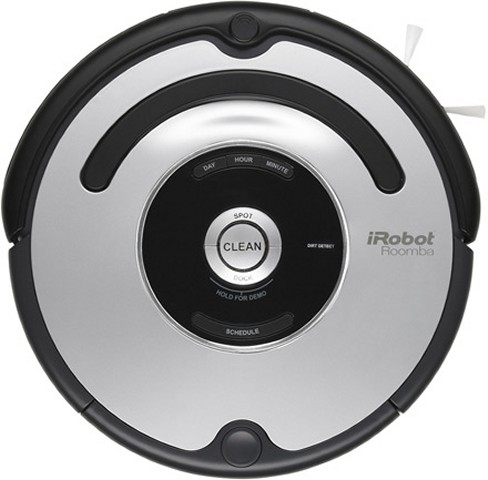
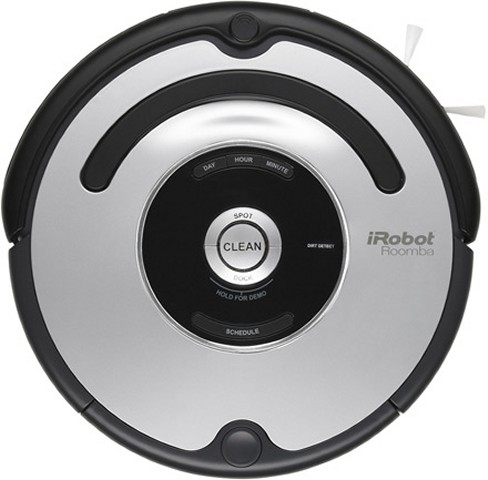
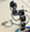
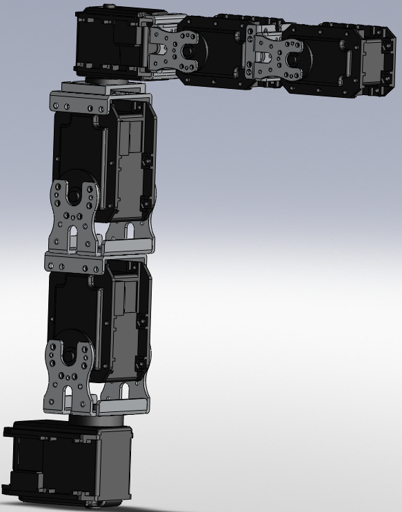
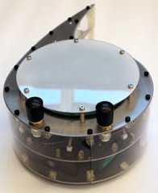

---
title: Documentation
layout: default
---
RLPark Documentation
Documentation is usually written on requests. If the code is unclear and
you would like a specific point to be documented in RLPark, please send
an email to the group
with the appropriate information.
RLPark repository:
Github repository: https://github.com/rlpark/rlpark
Code snippets on reinforcement learning:
Other documentation:
iRobot repository:
 

Github repository: https://github.com/rlpark/irobots
Code snippets:
Dynamixel repository:


Github repository: https://github.com/rlpark/dynamixel
Code snippets:
Critterbot repository:

Github repository: https://github.com/rlpark/critterbot
Code snippets:
Links
Learning more about reinforcement learning
The following two books are available online: